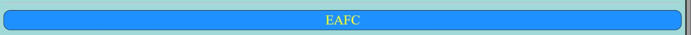

Selector Universal.
Código CSS
A todo lo que este dentro del elemento img1 se le aplica el siguiente estilo:

Resultado en html

Selector de Tipo.
Código CSS
Al h1 que esta dentro del elemento con ID t01 se le aplicará el siguiente estilo:
Resultado en html
Selector por ID.
Código CSS
A lo que este dentro del elemento v01 se le aplicará el siguiente estilo:

Resultado en html

Selector por clase.
Código CSS
A todo los elementos con la clase "contenido" se le aplicará el siguiente estilo:

Resultado en html

Selector por atributo.
Código CSS
A todas las imágenes que tengan src se le aplicará el siguiente estilo:
Resultado en html
Selector de lista.
Código CSS
A todos los footer y address les aplica el siguiente estilo:

Resultado en html
Selector de descendientes.
Código CSS
A todos los "p" que esten dentro de header justificará el texto.
Resultado en html
Selector hijos directos.
Código CSS
A los "li" que esten denro de un ul les aplicará el siguiente estilo:

Resultado en html
Selector hermano adyacente.
Código CSS
A las "p" que esten inmediatamente después de un "hr" les aplicará el siguiente diseño:
Resultado en html
Selector hermano general.
Código CSS
A los "div" que esten depués de la tabla los alineara al centro.